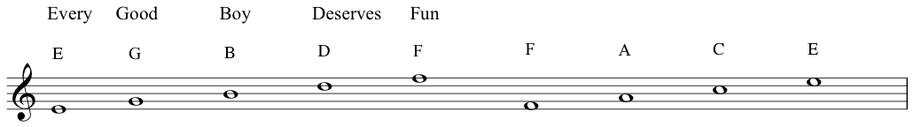

Early music example, written before the standardised stave/staff came into use:I think you can see how this was problematic!
Naming the notes:
The seven alphabetical note names in ascending order. Note the ledger line for the last A, to temporarily extend the stave/staff:
Here they are descending from A with more ledger lines:
The mnemonics for learning the position of the notes in the treble clef:

For a gender neutral version try: Every green bus drives fast!
The notes on a piano keyboard:
Finally we introduced the octave. Here are the seven note names shown in adjacent octaves on the stave. Note that when the lower note is on the line, its octave above is on a space and vice-versa:
This lower C with one ledger line is called 'middle C'You can find it right in the middle of the keyboard. The note names are sometimes written on electronic keyboards, but on a real piano it's near the lock of the lid